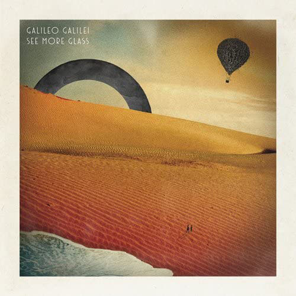

御宮間ブログ
御宮間ブログ
御宮間です 今回はGalileo Galileiというバンドについて話そうと思います
Galileo Galileiは北海道出身の三人組バンドで、現在は別名義で活動しています
私はこのバンドの大ファンで、全ての曲を聞き倒しています
せっかくなので、いくつか紹介していきたいと思います
是非最後までお付き合いください
一つ目は、「パレード」というアルバム
おすすめ曲は、「君から僕へ」「夜の窓辺と四葉のクローバー」「夏空」「SIREN」
Galileo Galileiの1stフルアルバムです
特徴的なのはやはり尾崎さんとChimaさんのデュエットでしょうか
「夜の窓辺と四葉のクローバー」では温かみのあるギターサウンドとマッチしていてとても心地いいですね
次に紹介するのは「PORTAL」というアルバム 私が一番好きなアルバムです
おすすめ曲は、「老人と海」「さよならフロンティア」「星を落とす」「くじらの骨」
前作パレードから打って変わって曲調はかなりオルタナティブやインディーに傾倒したものになっています
「星を落とす」はベースが最高ですね 全体的にぼやけたような曲調の中で鮮明に聞こえて印象的です
曲の系統もかなり違うのでなので、非常に楽しいアルバムとなっています
最後に紹介するのは「See More Glass」

おすすめ曲は「サニーデイハッピーエンド」「バナナフィッシュの浜辺と黒い虹」「プレイ！」
全体的に疾走感と爽快感のある曲調で、ミニアルバムであることも相まって最後まで軽く聞くことができますね
ちなみに、「親愛なる君へ」という曲はサブスクサービスでは聞くことができません
しかしながら、DTMとロックサウンドが際立っていてこれも非常にいい曲です
「バナナフィッシュの浜辺と黒い虹」は歌手のAimerさんとのコラボ曲です
この曲を語るには今の自分では語彙力が足りませんね まぁ『エモい』ってやつです
プレイリストを掲載していますので、一度聞いていただけたら嬉しいです
それでは、以上御宮間がお送りしました